Один из самых посещаемых и известных природных заповедников Америки - Национальный парк Гранд-Каньон. Гигантская пропасть, раскинувшаяся на плато Колорадо, занимает площадь почти 5 тысяч квадратных метров. Сегодня, его изображения можно увидеть везде: реклама, открытки, различные ролики и фильмы. Заповедник пользуется успехом не только среди туристов, но и самих жителей США.
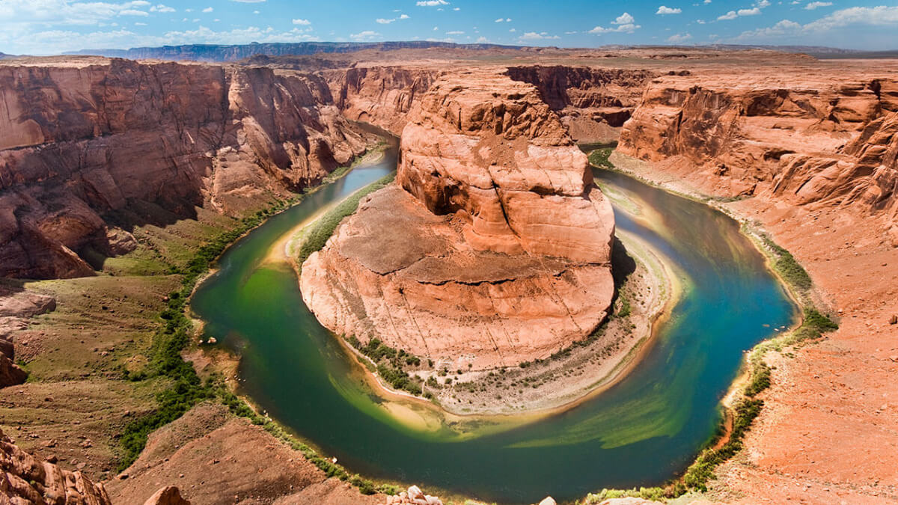
Название каньона не случайно: это действительно самый большой каньон на планете, его длина каньона почти 500 км, ширина — 28 км, а глубина 1,6 км. Этот каньон не самый глубокий в мире, но очевидно, самый впечатляющий своим ландшафтом.
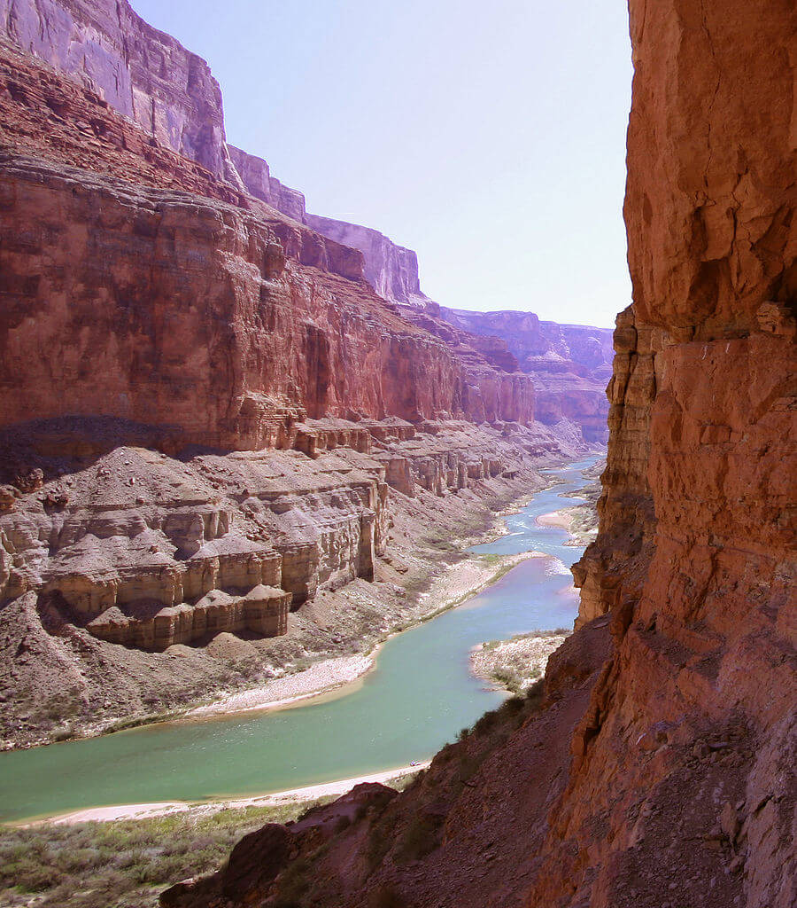
Рельеф в том виде, в котором мы можем наблюдать его сегодня, начал формироваться примерно 75 млн лет назад. Тогда плато Колорадо приподнялось примерно на 3 км, образовалась огромная расщелина, а 18 млн лет назад в нее начали стекаться воды окрестных рек.
Со временем мягкие породы были вымыты, и сегодня каньон (особенно его дно) представляет собой сооружение из твердых пород, разрушение происходит очень медленно и растянется еще точно не на один миллион лет.
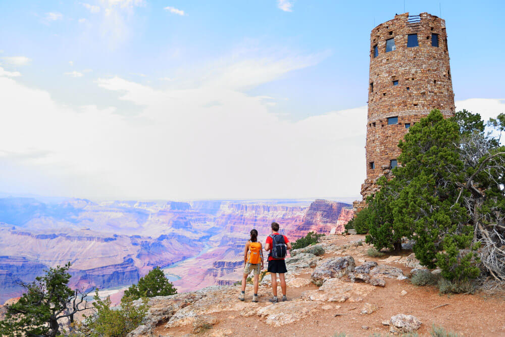
Климат национального парка — сложный и разнообразный, так как состоит из нескольких экосистем. Нижний уровень близок к пустынному климату Аризоны с сухим жарким летом. В верхней же, лесистой части каньона, зимой выпадает снег. Температура воздуха летом достигает +37 °C, зимой −17 °C.
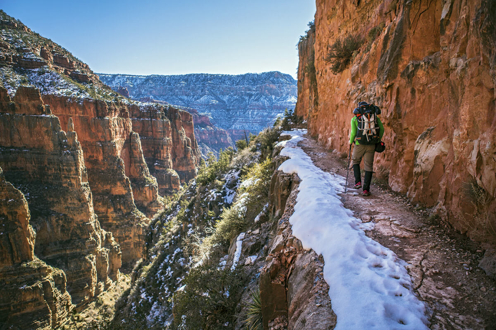
На территории Гранд-Каньона есть довольно много смотровых площадок в разных частях парка. Самая дорогая из них — Skywalk. Это огромная площадка с прозрачным дном, посетить ее стоит 83 USD. Также пользуется популярностью среди туристов Небесная Тропа — стеклянный мост в виде подковы, который висит в воздухе на высоте 1219 м.
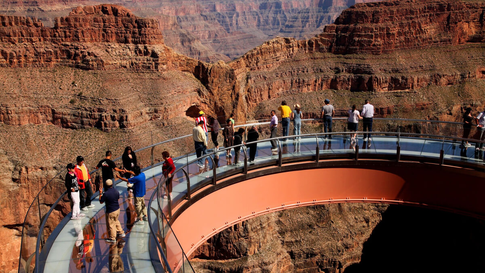
Путешествовать по каньону можно несколькими способами: пешком (на территории парка много удобных пешеходных троп). Прелесть такого путешествия в том, что можно не спеша насладиться постоянно меняющимися пейзажами. Например, одно и то же место на рассвете и вечером после захода солнца может выглядеть совершенно по-разному.
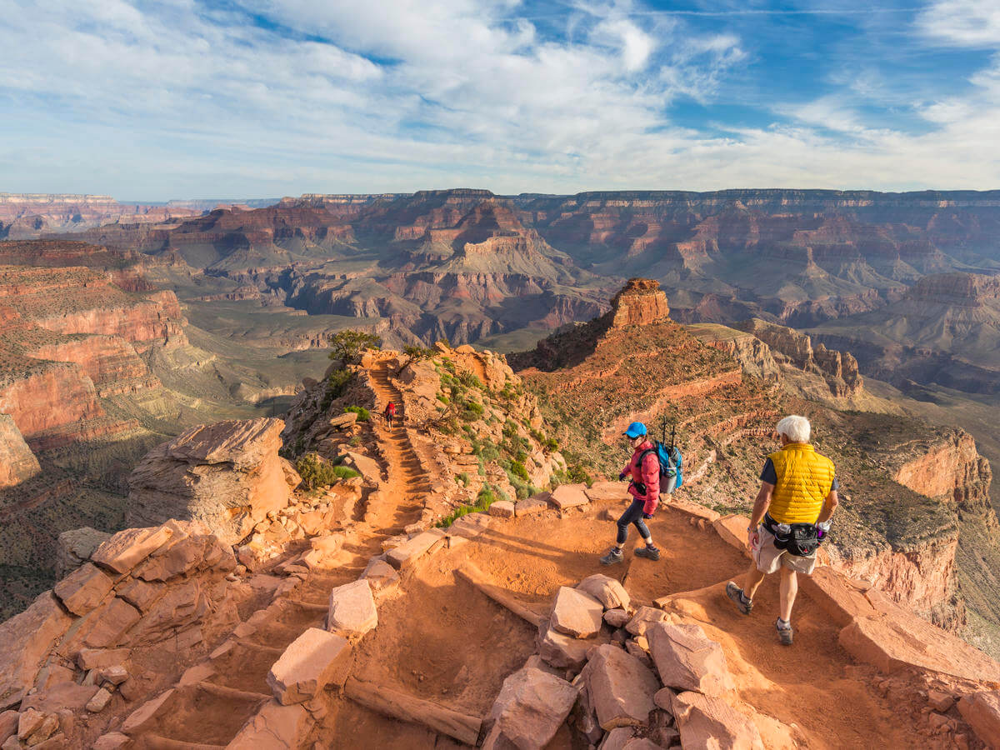
По реке Колорадо можно сплавиться на резиновых плотах, байдарках, каноэ или SUP-борде.
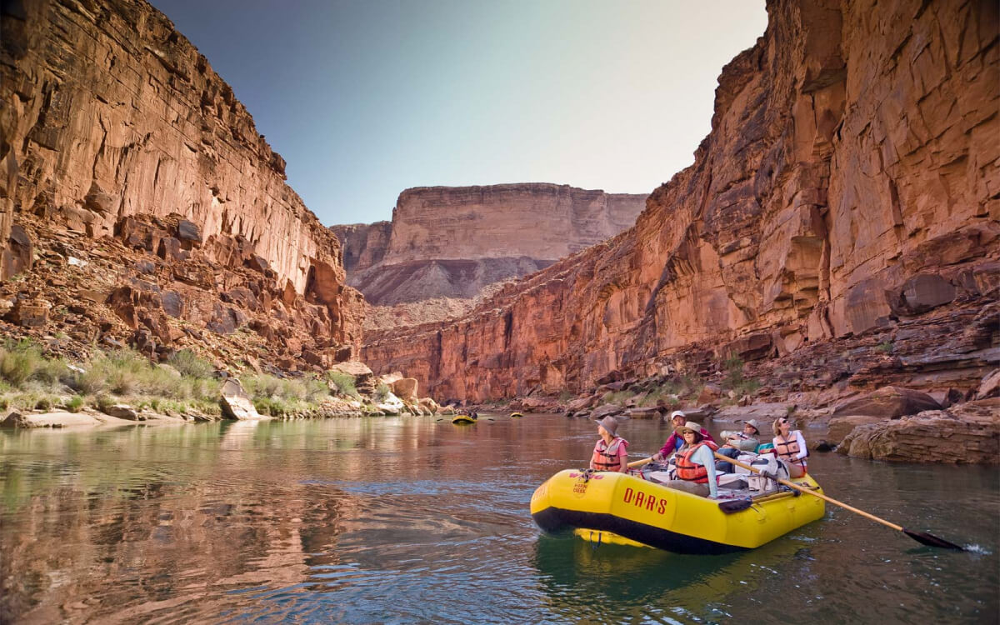
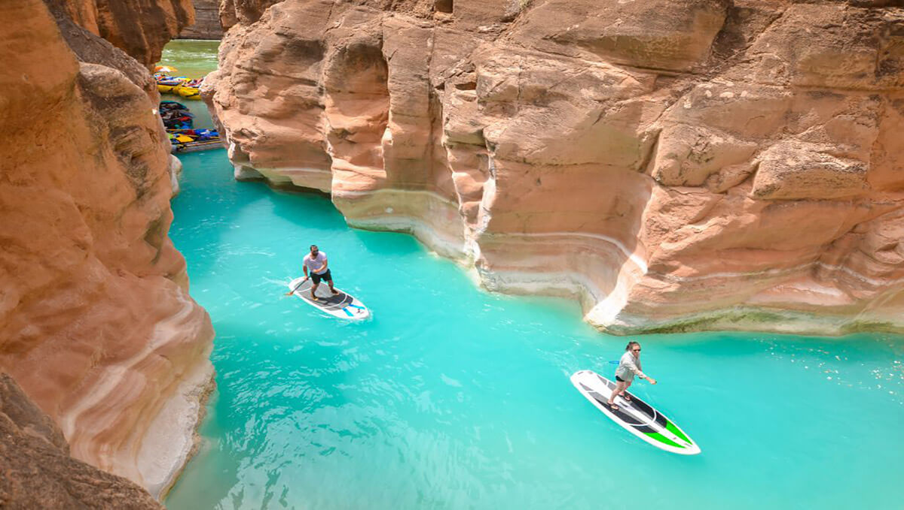
Можно арендовать велосипед, чтобы проехать по определенному маршруту.
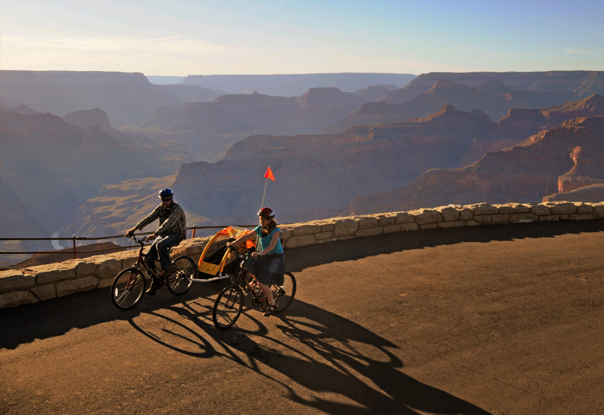
Находки в пещерах показывают, что самые первые обитатели в Гранд каньоне появились приблизительно в 2000 году до н.э. До середины 16 столетия Большой каньон населяло племя индейцев пуэбло – люди жили в пещерах.
Сегодня Гранд-каньон представляет собой огромный современный туристический комплекс с местами для ночлега, автостоянками, спусками.
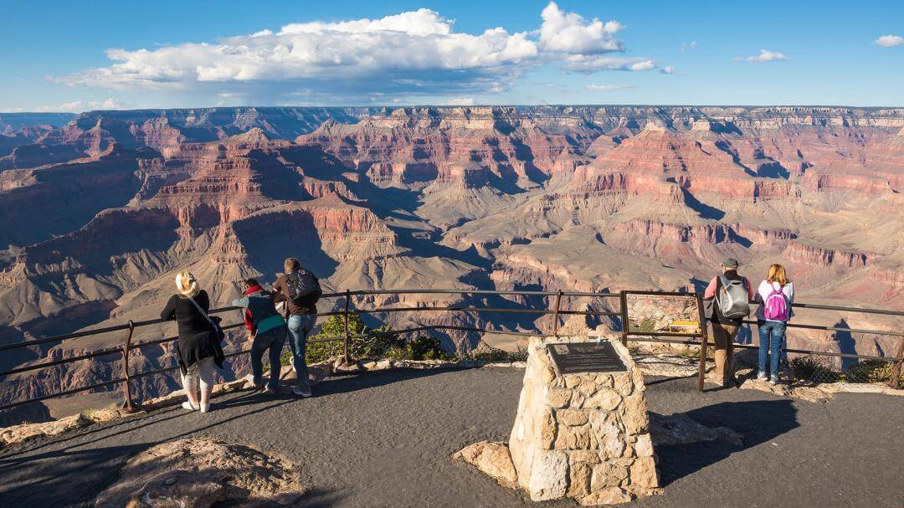
Многие туристы считают, что Большой Каньон самое красивое место в мире!
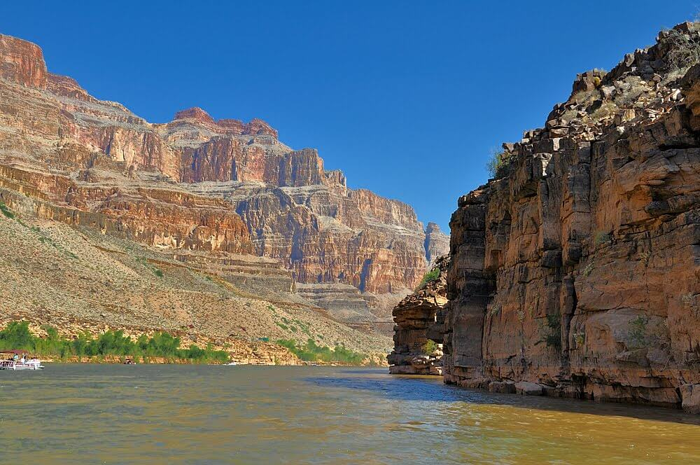
ВВЕРХ